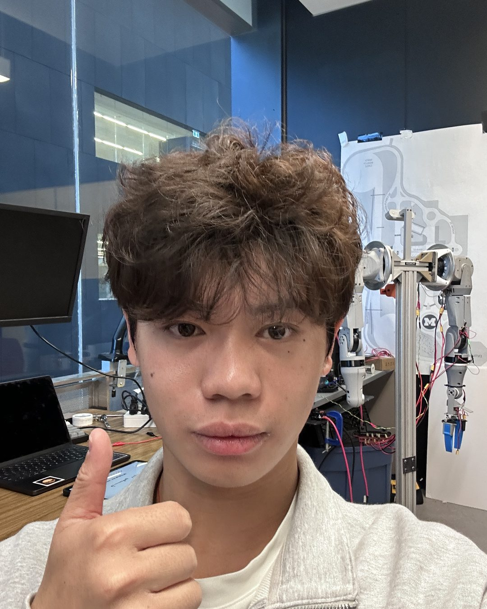

π₀.5 pick and place
A VLA fine-tuned for a humanoid arm
- π₀.5
- LeRobot
- Isaac Sim
Max Yuanrobot learning lab
Waterloo, ON
Click a station or the floor to drive the BracketBot. W A S D work too.
Loading robots…
[ robot learningVLAsworld action modelsreinforcement learning ]
Mechatronics Engineering at the University of Waterloo. Fine-tuning VLAs on the WATonomous humanoid team. Open to robotics and ML co-op roles.

BASc, Honours Co-op
Team Canada at FIRST Worlds 2025 [project]
A VLA fine-tuned for a humanoid arm
A dual-arm robot that makes a sandwich · 1st, BOTS
A quadruped walking policy, trained from scratch
Maps an unseen maze, then drives to the goal
An arm that hands you the tool you ask for
Pathing and vision for a FIRST Worlds robot
A turret that fires when you get distracted · 2nd, RythmHacks
Hover a skill to see where I used it.
Where people have viewed this site from.